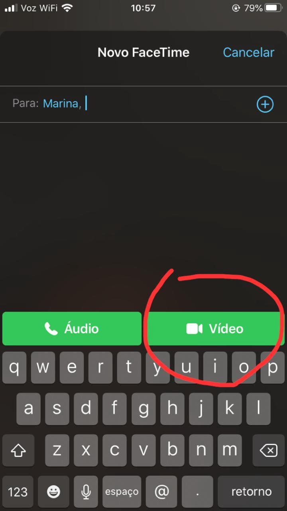

Como fazer uma chamada de video no FaceTime?
Primeiro passo:Clique no ícone do Facetime em sua tela inciial
Segundo passo:Busque pelo nome do contato que você deseja ligar. Esse contato precisa já estar salvo em seu celular.
Terceiro passo: Clique no nome do contato, e em seguida selecione a opção "vídeo". Agora é só esperar seu contato atender a chamada!
